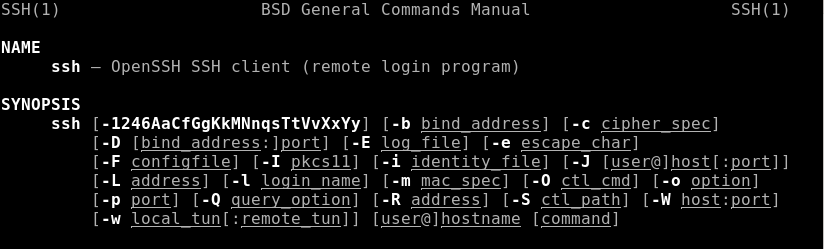
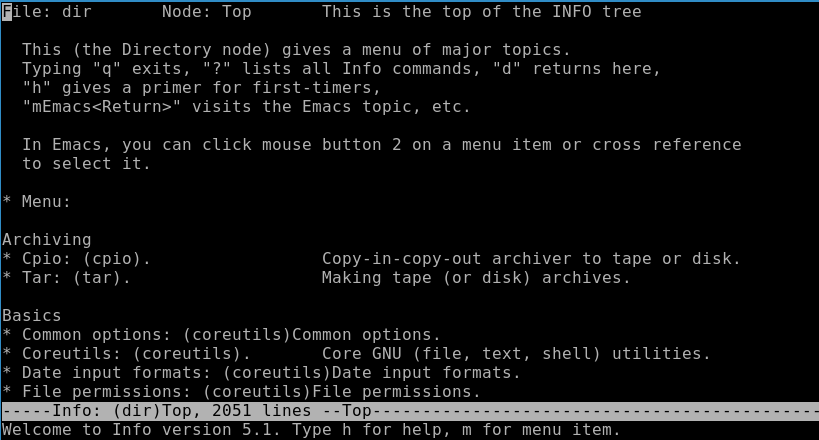
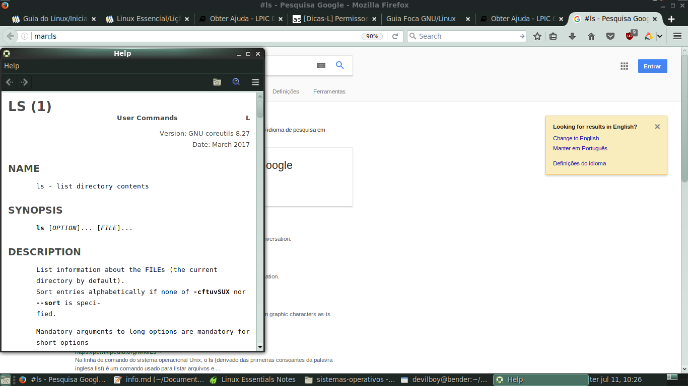
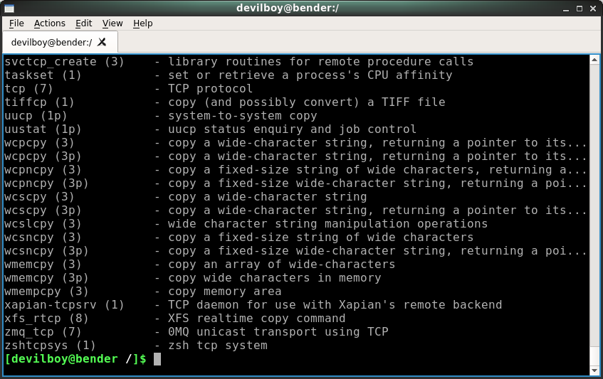
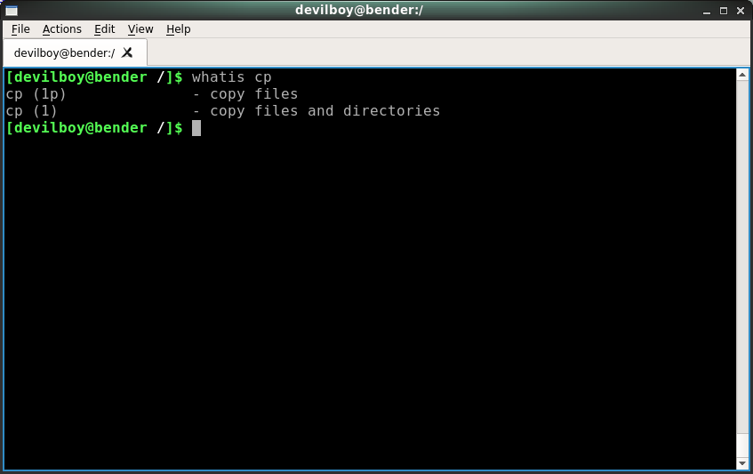

A biblioteca gigantesca com a mais variada documentação sem duvida que contribuiu para o sucesso no GNU/Linux, esta é diferente dos sistemas proprietários com as seguintes características:
- comunidade participa:
Além da documentação obrigatoria feita pelas equipes responsáveis pelos inúmeros programas GNU, existe uma enorme comunidade dedicada à criação de documentação. Foi criado o site tldp.org - Linux Documentation Project. Com o objectivo de ajuda a organizar equipas de voluntários que se dedicam a documentar e a traduzir documentos por exemplo.
- textos actualizados:
geralmente os documentos ficam em sistemas de controle de versão (VCS), no qual permite que o autor possa receber traducoes adicionais e correções de outros colaboradores. Assim, o documento melhora gradualmente acompanhando as mudanças de versão.
- padrão na documentacao:
apesar da variedade de programas e pessoas, os documentos são razoavelmente padronizados, utilizando geralmente formatos e ferramentas padrões.
A tecla TAB - finalizar ou completar nomes com TAB
Para facilitar a escrita dos nomes de ficheiros na linha de comandos podemos finalizar com a tecla TAB para completar comandos
Ajuda "online" de comandos
Apenas os comandos internos sao descritos com mais detalhe com o comando help
Alguns exemplos de comandos internos: cd, exit, echo, bg, fg, source, help
help exit
A chamada de ajuda online em programas pode variar de um comando para outro, depende apenas do seu autor, a forma mais comum de uso é:
- --help
- -h
- -?
infelizmente nao existe convencao universal para a ajuda online
Para ler texto demasiado extenso que termina cortado no ecra, use as teclas shift+Pageup (para subir) ou shift+Pagedown (para descer). É tambem possível utilizar um paginador como o less ou more, que permite uma leitura mais simples apenas com as setas para cima/baixo do teclado e carregado na tecla q para abanonar a vista.
comando --help | less
Localizar a documentacao no Linux
Por padrão, o programa man é instalado e os ficheiros de páginas de manual são opcionalmente instalados, uma vez que ocupam espaço em disco. No sistema Linux, contamos com centenas de ficheiros documentados que servem para ajudar a explicar:
- documentação em ficheiro disponível:
/usr/doce/usr/share/doc - ajuda online, no próprio programa
- documentacao atraves do man ou info
Por exemplo, como posso localizar a documentação fornecida pelo programa bash ?
ls -lR /usr/share/doc/bash
Por exemplo, consultar a pagina do comando ls no man para saber mais sobre o comando:
man ls
Alguns exemplos de ficheiro que servem de suporte para documentacao
| formato | breve descriçao |
|---|---|
| .txt | texto em caracteres ASCII. README, INSTALL, LEIAME ou TXT |
| .html | formato codificado em caracteres ASCII, compatível com os browsers e utilizado nas páginas da internet. |
| .sgml | é um formato codificado em ASCII, semelhante ao HTML. Não possui um visualizador padrão |
| .xml | formato também parecido com o HTML. É um sub-tipo de SGML, e permite também uma fácil conversão para outros formatos |
| Portable Data Format criado pela Adobe, permite que documentos sejam exibidos em qualquer computador com as fontes e layouts correctos. suporta textos, imagens, tabelas e recursos de segurança. | |
| postscript | criado pela Adobe, com a finalidade de reproduzir documentos em impressoras de alta qualidade gráfica. Assim como o PDF, esse formato não é utilizado para edição, mas sim para publicação de documentos, podendo ser visualizados com o utilitário ghostview |
| man | documentos escritos em formato troff |
| info | conhecido tambem por texinfo, semelhante ao man, possui navegação por tópicos |
Conhecer os tipos de documentacao
Geralmente o maior desafio não é a falta de recursos, mas filtrar e selecionar a informação realmente importante. Para realizar uma pesquisa eficiente, devemos conhecer as melhores fontes de informação.
- How to/Como fazer:
Serve para instruir a fazer um determinado projeto ou tarefa. mais voltado para objetivos didáticos, geralmente uma lista de procedimentos passo-a-passo, podendo também ser chamado de tutorial/receita.
| link | descricao |
|---|---|
| tldp.org | linux documentation project |
| yolinux.com | repositorio de links com variada informacao |
| linux.org | forum ingles com tutoriais |
- manual/wiki:
mais específico que um how-to. objetivo principal ser uma fonte de referência sobre um tópico, sem muitos objetivos didáticos, fornecendo uma forma completa e fácil de encontrar toda a informação sobre determinado assunto.
| wiki | descricao |
|---|---|
| wiki.arch.org | wiki do arch |
| wiki.gentoo.org | wiki do gentoo |
- FAQ:
Frequently Asked Questions - ou perguntas frequentes em portugues - é um documento baseado em perguntas e respostas mais comuns.
| link | descricao |
|---|---|
| getgnulinux.org | faq |
| debian.org | faq do debian |
| linfo.org | The Linux Information Project |
| kali.org | faq do kali |
| linuxfromscratch | lfs |
| tldp.org | tldp |
- man pages - normalmente a shell vem fornecido com um utilitario chamado de man(manual). oferece um formato padrao na documentacao abordado a maioria dos utilitarios, bibliotecas e chamadas de sistema.
MAN
No Linux, o programa man é a interface usada para visualizar os manuais de referência do sistema.
o man é o visualizador de manuais do sistema. Ele pode ser usado para mostrar páginas de manual.
sintaxe: man [NUMERO DA SECCAO] [NOME DA PAGINA]
indicar o numero da secçao do manual depois do comando man:
man 1 man
Cada argumento indicado no comando man normalmente é o nome de um programa. as paginas associadas a cada um desses argumentos sao encontradas e exibidas. um numero de seccao e fornecido, que indica ao man apenas a procurar nessa sesaso do manual. a accao padrao e procurar em todos as sessoes disponiveis, seguindo um padrao predefinido e mostrar apenas a primeira pagina encontrada mesmo que exista outras ocorrencias de paginas de outras sessoes.
Seccoes do man
Enquanto ler documentação, vai ver um nome referente ao comando seguido de um número entre parênteses LS(1), o número faz de referência a uma dessas seções.
exemplo de man ls (imagem do man com o numero 1)
Alguns comandos podem ter a documentação espalhada por varias seçoes, então os números após o nome do comando podem ajudar a identificar a seção correta para encontrar um tema específico de informação.
as paginas do man estão divididas varias seccões organizadas da seguinte maneira:
| Número de referência | Seccao aborda o seguinte tema | |
|---|---|---|
| 1 | User commands | seção para pesquisar as informações sobre comandos usados na linha de comando. |
| 2 | System calls | Esta seção explica os argumentos e o proposito das chamadas de sistema pelo sistema operativo |
| 3 | C language library functions | sessao bastante util para programadores C e outras linguagens derivadas como python. Explica argumentos, ficheiros header, comportamentos e chamadas de funçao biblioteca de C |
| 4 | Device files and drivers | ficheiros especiais normalmente ficheiros dentro da pasta /dev/. por exemplo man 14 tty man 4 pts |
| 5 | Configuration files and file formats | ficheiros comuns, informacoes sobre o uso do sistema |
| 6 | Games | informacoes sobre jogos e screensavers |
| 7 | Miscellaneous | tudo o que nao foi documentado ate agora vai ser colocado aqui |
| 8 | Administrator commands | comandos administrativos e informacao sobre serviços do sistema |
| 9 | Kernel functions n ”‘New”’ commands |
para aceder a sessao desejada colocamos o valor numerico entre man e o comando que desejamos saber mais. vamos ver a sessao numero 3 de "funcoes da biblioteca C" para o comando printf.
[user@host]$ man 3 printf
Estrutura de uma pagina man
as paginas man seguem a seguinte estrutura no formato texto ASCII:
| capitulo | conteudos |
|---|---|
| NAME | nome do comando e breve descricao |
| SYNOPSIS | descricao e sintaxe do comando |
| DESCRIPTION | descricao breve dos efeitos do comando |
| OPTIONS | opcoes disponiveis |
| ARGUMENTS | argumentos disponiveis |
| FILES | ficheiros auxiliares |
| EXAMPLES | exemplos praticos na linha de comando |
| SEE ALSO | topicos relacionados |
| DIAGNOSTICS | erros e mensagens de aviso |
| COPYRIGHT | origem e autores |
| BUGS | limitacoes e falhas |
como ler uma pagina man

Para continuar a ler texto extenso use as teclas seta para cima e para baixo para deslizar pelo ecra.
| Simbolo | Significado da legenda |
|---|---|
| - e -- | indicar uma opcao |
| [] | opcao nao obrigatoria |
| {} | agrupar uma opcao necessaria |
| barra vertical | opcoes excluentes entre si |
| texto sublinhado | indica argumento do comando |
| ... | indica que o comando aceita varios objectos como argumento |
Como o man utiliza o comando less em segundo plano, para paginar (forma de visualizar o texto em etapas) e controlar a informação em tela, você pode navegar por uma página de manual da mesma forma que se navega com o comando less.
| tecla de atalho | descrisao |
|---|---|
| h | mostra um texto de ajuda |
| q | sair |
| / | pesquisa no texto |
| n | repetir a pesquisa, onde o cursor se encontra |
| N | inverte a pesquisa no sentido do fim para o inicio do te |
MANPATH - ficheiros man
os ficheiros do man são armazenados em pastas especificas, definidos pela variável de ambiente $MANPATH ou através do ficheiro /etc/manpath.config.
echo $MANPATH
existe um comando dedicado para alterar a variavel, nao e recomendavel editar manualmente
manpath
as pastas sao listadas separadas por dois-pontos :.
manpath
/usr/local/share/man:/usr/share/man
groff pré-processador de texto
O groff (GNU troff) é um pré-processador de texto que gera uma apresentação apropriada de um texto para ser visualizado no ecra. paginas man são escritas em sintaxe especial e depois processadas pelo programa groff.
info outra fonte de ajuda
Outra forma de se obter ajuda para um programa e outro sistema de documentação denominado info ou texinfo conhecidas tambem como info pages. Originou-se com o projeto GNU era suposto ser apenas documentação de informação para o "sistema GNU". No entanto, uma vez que o GNU também aceita muitos softwares não criados sob os auspícios da FSF e as ferramentas GNU são muito usadas em sistemas que seguem uma abordagem mais conservadora, a FSF cedeu em muitos casos.
O info é mais vantajoso para conteúdos de ajuda de maior tamanho, pois ele possui várias funcionalidades de navegação como: atalho para a página anterior ou seguinte, referências cruzadas e índice. Além disso, ele é também licenciado sob a GPL e é o sistema de documentação padrão do projeto Gnu.
Os ficheiros do info estão dentro da pasta /usr/share/info. Assim como os ficheiros do man, seus ficheiros também são compactados, visando economia de espaço em disco. 
Consultar paginas de manual fora da linha de comando
no menu iniciar do KDE e gnome:
#ls
escrever o seguinte comando na barra onde se indica o endereço www no firefox
man:ls

apropos
uma boa prática é procurar com o comando apropos antes de ler se quer quais quer páginas de manual. whatis e apropos que procuram informacoes nas descricoes resumidas das paginas de manual marcadas com o titulo "nome".
Para fazer a busca no banco de dados whatis, deve ser usado o comando whatis ou apropos.
apropos cp 
o que é ? - whatis
O comando whatis exige o saber o nome exato do comando. Bastante mais flexível e abrangente, que o comando apropos. Procura por ocorrência parcial no nome do objeto ou na descrição resumida.
whatis cp 
onde fica ? - whereis
Comando whereis localiza os ficheiros binários, seu codigo-fonte, ficheiros de configuracao e a página de manual para um comando. A pesquisa é feita usando os caminhos de páginas de manuais configuradas no sistema (normalmente o ficheiro /etc/manpath.config)
whereis ls
ls: /usr/bin/ls /usr/share/man/man1/ls.1p.gz /usr/share/man/man1/ls.1.gz
o whereis é mais completo que o comando which. é aconselhável o uso deste comando para descobrir mais informacoes.